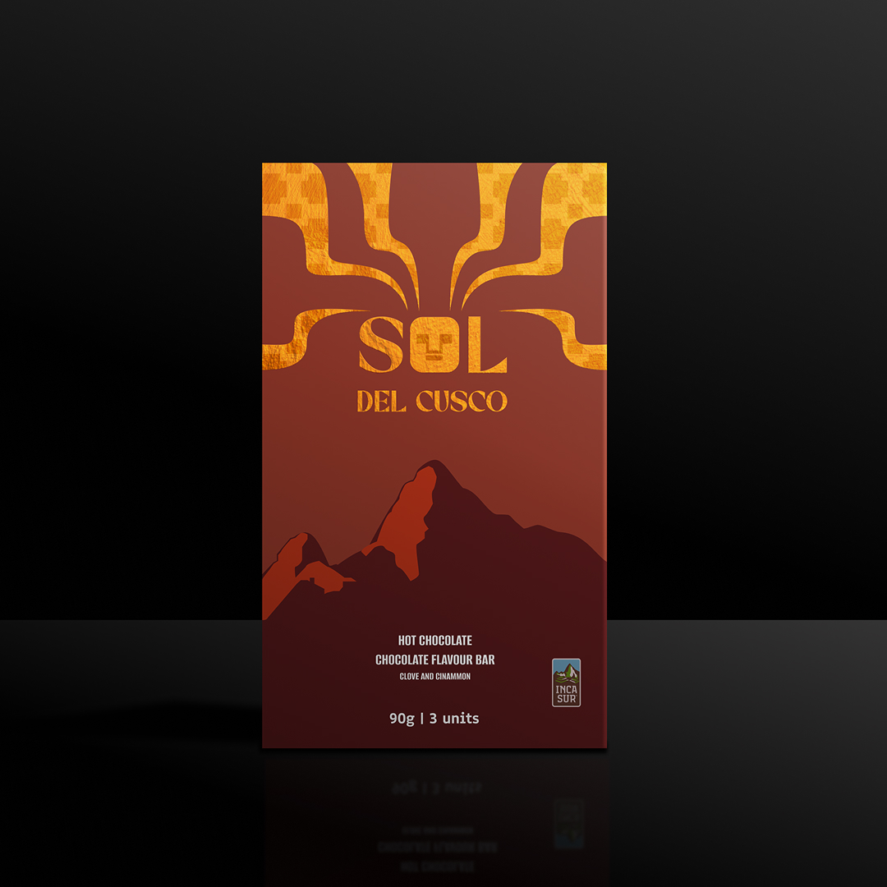
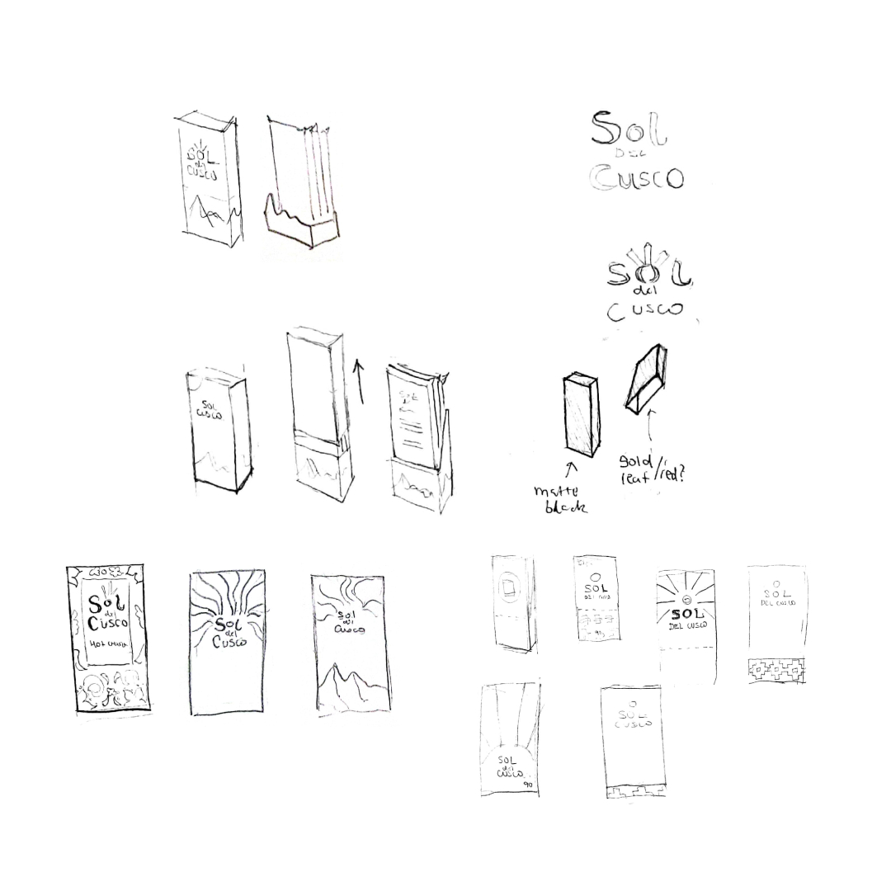
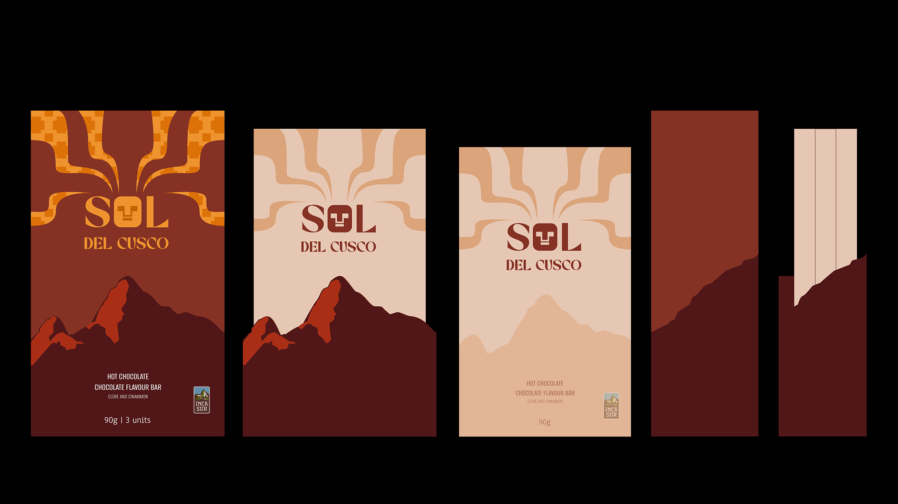

Sol del Cusco
Packaging Redesign

Redesign of Sol del Cusco Chocolate Flavoured Cup Tablet by IncaSur, a beloved Peruvian brand. The project aims to modernize its visual identity for international markets, enhancing hierarchy and premium appeal while preserving its cultural essence.
Redesign Rationale
Design Goal
Create a modern, globally appealing package that retains cultural authenticity and reflects the brand's premium quality.
Cultural Context
In Peru, red and green evoke hot chocolate and Christmas, making Sol del Cusco instantly recognizable.
Global Disconnect
These colours don't carry the same meaning abroad, limiting international appeal.
Visual Hierarchy
Cluttered layout weakens readability and shelf presence.
Perceived Value
Current design lacks a premium look, misaligning with the brand's quality.
Moodboard Explorations
Three visual directions explored before arriving at the final design.
Ideation
Visual Symbolism
Sun rays shaped like the steam of hot chocolate, styled with Incan geometric influence inspired by traditional gold crafts.
Cultural Connection
Featured Machu Picchu's silhouette to honour Peruvian heritage and the brand's Cusco origins.
Experiential Design
The standee mirrors Machu Picchu's shape and, along with the sleeve, is crafted from durable, premium materials, designed to be kept and cherished by consumers.

